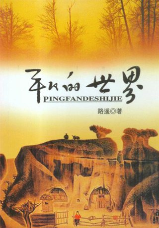
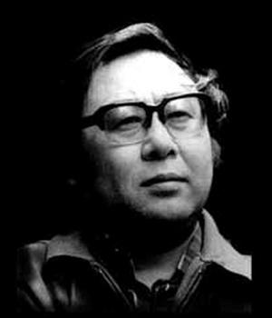

平凡的世界
路遥简介
路遥（1949―1992），原名王卫国，中国当代农村作家。1949年12月23日生于陕西榆林市清涧县石咀驿乡王家堡村一个贫困的农民家庭，7岁时因为家里困难被过继给延川县农村的伯父；1969年回乡务农。1973年进入延安大学中文系学习，其间开始文学创作。大学毕业后，任《陕西文艺》（今为《延河》）编辑。1980年发表《惊心动魄的一幕》，获得第一届全国优秀中篇小说奖，1982年发表中篇小说《人生》。
1992年11月17日上午8时20分，路遥因肝病医治无效在陕西西安英年早逝，年仅42岁。
平凡的世界简介
第一部
1975年初农民子弟孙少平到原西县高中读书，他贫困，自卑；后对处境相同的地主家庭出身的郝红梅产生情愫，在被同班同学侯玉英发现并当众说破后，与郝红梅关系渐变恶劣，后来郝红梅却与家境优越的顾养民恋爱。少平高中毕业，回到家乡做了一名教师。但他并没有消沉，他与县革委副主任田福军女儿田晓霞建立了友情，在晓霞帮助下关注着外面的世界。少平的哥哥少安一直在家劳动，与村支书田福堂的女儿――县城教师田润叶青梅竹马。少安和润叶互有爱慕之心，却遭到田福堂反对。经过痛苦的煎熬，少安到山西与勤劳善良的秀莲相亲并结了婚，润叶也只得含泪与父亲介绍的一直对她有爱慕之情的李向前结婚。这时农村生活混乱，又遇上了旱灾，田福堂为了加强自己的威信，组织偷挖河坝与上游抢水，不料竟出了人命。为了“农业学大寨”，他好大喜功炸山修田叫人搬家又弄得天怒人怨。生活的航道已改变地步。
第二部
1979年春，十一届三中全会后百废待兴又矛盾重重，田福堂连夜召开支部会抵制责任制，孙少安却领导生产队率先实行，接着也就在全村推广了责任制。头脑灵活的少安又进城拉砖，用赚的钱建窑烧砖（大部分为贷款），成了公社的“冒尖户”。少平青春的梦想和追求也激励着他到外面去“闯荡世界”，他从漂泊的揽工汉成为正式的建筑工人，最后又获得了当煤矿工人的好机遇，他的女友晓霞从师专毕业后到省报当了记者，他们相约两年后再相会。润叶远离她不爱的丈夫到团地委工作，引起钟情痴心的丈夫酒后开车致残，润叶感到内疚回到丈夫身边，开始幸福生活。她的弟弟润生也已长大成人，他在异乡与命运坎坷的郝红梅邂逅，终于两人结为夫妻。往昔主宰全村命运的强人田福堂，不仅对新时期的变革抵触，同时也为女儿、儿子的婚事窝火，加上病魔缠身，弄得焦头烂额。
第三部
1982年孙少平到了煤矿，尽心尽力干活，从学生成了一名优秀工人。可是，就在孙少平与田晓霞产生强烈感情的时候，田晓霞却因在抗洪采访中为抢救灾民光荣牺牲了，后来田福军给孙少平发了封电报，少平悲痛不已。少安的砖窑也有了很大发展，他决定贷款扩建机器制砖，不料因技师根本不懂技术，砖窑蒙受很大损失，后来在朋友和县长的帮助下再度奋起，通过几番努力，终于成了当地社会主义建设的领头人。却没想到，少安的妻子秀莲，在欢庆由他家出资一万五千元扩建的小学会上口吐鲜血，确诊肺癌。润叶生活幸福，生了个胖儿子，润生和郝红梅的婚事也终于得到了父母的承认，并添了可爱的女儿。27岁的少平在一次事故中为救护徒弟也受了重伤，英俊面容尽毁，却遇少时玩伴金波之妹表白，少平为她的前途与自己的感情选择拒绝；他们并没有被不幸压垮，少平从医院出来，面对了现实，又充满信心地回到了矿山，迎接他新的生活与挑战。